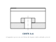
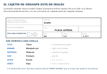

Contenido
Sesión 9
Generar los planos
Aquí se cierra el círculo: el programa va a generar en segundos las mismas vistas que tú dibujaste a mano en la S3. Pero qué vistas poner y qué cotas llevan lo sigues decidiendo tú — y eso es justamente lo que se evalúa.
Lo primero: la plantilla ISO
Al crear el Dibujo, elige una plantilla ISO. Las plantillas ANSI trabajan en tercer diedro y pulgadas: colocarían las vistas al revés de como las has aprendido. El propio programa te lo dice al crearlo: «el dibujo tendrá automáticamente 4 vistas de proyección de primer ángulo».
Colocar las vistas
Al crear el Dibujo, el programa te ofrece colocar cuatro vistas automáticas (superior, frontal, derecha e isométrica). Dile que no y créalo vacío: esas cuatro no son las que pide tu lámina, y la «derecha» que trae es la contraria a tu perfil izquierdo. Si ya te las ha puesto, bórralas y empieza de nuevo.
Elige primero el alzado y coloca las demás con Vista proyectada, arrastrando desde él. En primer diedro, la planta cae debajo y el perfil a la derecha, igual que en tu lámina.
Cuando las líneas de trazos ya no bastan
Una pieza con agujeros por dentro se llena de líneas de trazos, y llega un momento en que no hay quien la lea. Para eso está el corte: se imagina que se sierra la pieza por un plano, se retira la mitad de delante y se dibuja lo que queda.
Tres reglas y ya sabes leer uno:
- El material cortado por la sierra se raya con líneas finas e inclinadas. Lo que queda detrás del plano se ve entero y no se raya.
- Lo que era agujero deja de dibujarse con línea de trazos: está abierto por la sierra, así que se ve y va con línea continua.
- El corte se nombra con dos letras y se indica en otra vista por dónde pasa el plano: CORTE A-A.

En Onshape lo tienes en Vista de sección: eliges la vista de partida, marcas por dónde corta el plano y la coloca sola, ya rayada. Úsalo solo si tu pieza lo necesita: si con las tres vistas se entiende, no hace falta.
El cajetín está en inglés

Exportar
Exporta el plano a PDF. Cuando pregunte por el texto, elige Seleccionable: así las cotas se pueden buscar y copiar en vez de ser un dibujo plano.
Lo que sale de esta sesión
Un PDF con tu plano: vistas en primer diedro, acotación completa y cajetín relleno. Es la pieza central del dosier de la próxima sesión.
Lista desordenada
Ordena los pasos para sacar el plano de tu pieza.
- Crear el Dibujo eligiendo una plantilla ISO
- Colocar el alzado, que es la vista que más información da
- Añadir las demás vistas con Vista proyectada
- Acotar el plano con las medidas necesarias
- Rellenar el cajetín
- Exportar a PDF con el texto seleccionable